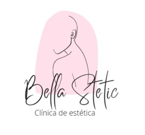

- A Belle Stetic ocupará uma área de aproximadamente 106m², estará localizada em Taguatinga, Brasília-DF QSD 05, lote 05 Taguatinga Sul - 72020-111.
- A busca pela nossa clínica está mais focada nas proximidades, mas também por outras cidades do DF já que o nosso marketing é responsável por atrair novos pacientes/clientes através de nossas mídias sociais.
- O retorno do nosso investimento é importante para melhor conforto do nosso espaço, trazer sempre as novidades do mundo da estética, que está cada vez mais crescendo e futuramente abrir novas unidades.
- O dinheiro será aplicado de acordo com as necessidades atuais e futuras da empresa, seja com maquinários, profissionais, estrutura.
- De acordo com o feedback de nossos clientes/pacientes, a nossa escabilidade foi dividida da seguinte maneira, 85% expressaram estarem satisfeitos com os resultados buscados, preços e atendimento, os 15% restantes o fator preço é mencionado, assim os mesmos optaram por pesquisar na concorrência.